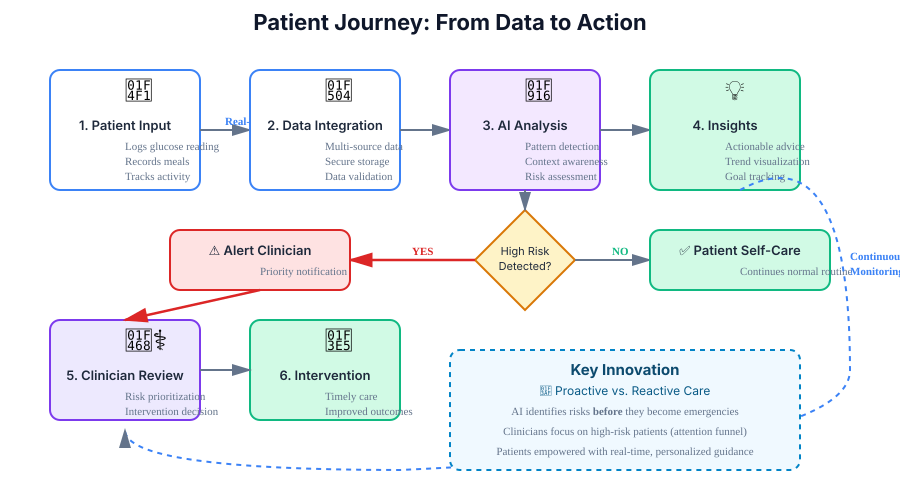
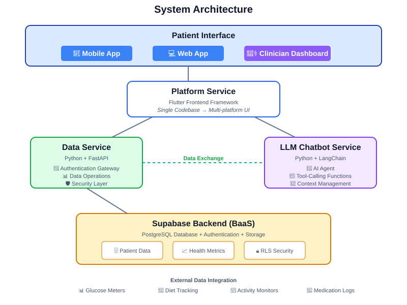
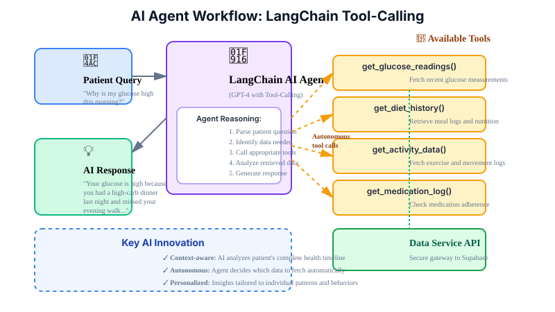
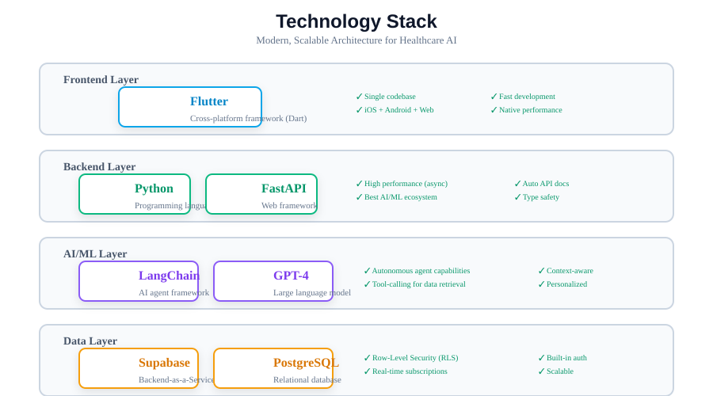

Introduction: How It Works
In Malaysia, chronic non-communicable diseases (NCDs) are the leading cause of death and disability, placing immense strain on a healthcare system primarily designed for acute, episodic care [1]. This project develops a prototype AI-enabled digital health platform that integrates multi-source health data to provide actionable insights, facilitating timely interventions by both patients and clinicians.

Project Vision
Transform chronic disease management from a reactive process into a proactive, data-driven partnership between patients and healthcare providers.
Problem Statement
Chronic disease patients lack a unified platform that integrates fragmented health data and provides real-time, actionable, and personalised guidance. Existing digital health solutions act as simple data repositories and don't fully leverage AI to detect early warning signs.

Primary Goal
Design, develop, and deliver a high-fidelity prototype that addresses these critical gaps by the end of the semester.
Literature Review
The Malaysian digital health market is expanding rapidly, yet competitive analysis reveals a significant market gap [2, 4]:
DoctorOnCall & Doc2Us: Reactive transactional teleconsultations. Serve patients who actively seek care but lack continuous monitoring.
BookDoc: General wellness and gamified activity tracking, not clinical disease management.
Naluri Health: Human-coaching model. Effective but resource-intensive with scalability challenges.
Market Gap
Unmet need for a scalable, automated platform that fosters continuous, proactive care relationships [4].
Conclusion
This project addresses a critical gap in the Malaysian digital health ecosystem by developing a prototype for an AI-powered platform focused on proactive and continuous chronic disease management.
Patient Empowerment: By integrating data and providing personalised AI-driven insights, the platform empowers patients in their self-management journey.
Clinician Efficiency: Provides an intelligent "attention funnel" that prioritises high-risk individuals, enhancing efficiency and enabling timely interventions.
The successful delivery of this prototype validates the technical feasibility and strategic value, laying the groundwork for a commercially viable product.
Methodology: System Architecture
The solution is a high-fidelity prototype built on a modern, decoupled system architecture designed for scalability, security, and rapid development.

Platform Service: Flutter frontend for consistent UI across mobile and web. Data Service: Python + FastAPI gateway to Supabase with authentication. LLM Chatbot Service: Conversational logic and patient context management.
AI Core: Autonomous Agent
Implemented using the LangChain framework with LLM tool-calling capabilities. The agent is provided with custom Python functions ('tools') to interact with the Data Service, fetch live patient data (glucose readings, diet history), and autonomously gather information to generate personalised responses.

Technology Stack

Future Works
- Clinical Integration: Integration with Hospital Information Systems (HIS) and Electronic Health Records (EHRs) using HL7 FHIR standards.
- Expansion to Other NCDs: Adapt modular architecture to support hypertension, COPD, and chronic kidney disease.
- Advanced Predictive Analytics: Incorporate predictive ML models to forecast health risks enabling preventative interventions.
- Telemedicine Integration: Secure video consultation capabilities for clinicians to initiate virtual visits upon high-risk alerts.
References
[1] A. S. Ramli and Y. S. Taher, "Managing Chronic Diseases in the Malaysian Primary Health Care – A Need for Change," Malaysian Family Physician, vol. 3, no. 1, pp. 6–13, 2008.
[2] Grand View Research, "Asia Pacific Digital Health Market Size, Share & Trends Analysis Report By Technology (Tele-healthcare, mHealth), By Component (Software, Hardware, Services), By Region, And Segment Forecasts, 2025 - 2033," 2024.
[3] CodeBlue, "Over Two Million Adults In Malaysia Live With Three NCDs: NHMS 2023," May 28, 2024.
[4] PwC Malaysia, "Healthcare in a Digital Economy: Reimagining the future of HealthTech in Malaysia," 2021.